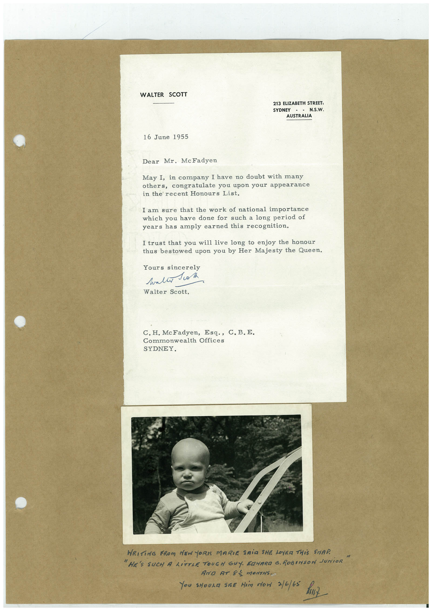

Book 1 · scan 113


Description
Transcription
Context
Review notes
Compare the machine draft with the scan. Handwriting and names need human review.
Artifacts
Edit the artifacts field in this note’s frontmatter to change these records. This summary is generated.
B01-S113-A01 — Letter & Photo — Book 1, scan 113
Types: Typed document, Letter, Photo
Scope: Whole scanned page; individual items can be split out during review.
Caption: Not mapped yet.
Caption source: Not recorded yet.
Caption status: unmapped
Machine transcription
WALTER SCOTT 213 ELIZABETH STREET, SYDNEY - - N.S.W. AUSTRALIA 16 June 1955 Dear Mr. McFadyen May I, in company I have no doubt with many others, congratulate you upon your appearance in the recent Honours List. I am sure that the work of national importance which you have done for such a long period of years has amply earned this recognition. I trust that you will live long to enjoy the honour thus bestowed upon you by Her Majesty the Queen. Yours sincerely wallo ok Walter Scott. C. H. McFadyen, Esq., C. B.E. Commonwealth Offices SYDNEY. WRITiNG FROM NEW YORIS MARIE SAiD SHE LOYER THiS STAP. "HE'S SUCH A LiTTLE TOUGH GUY. EQHARD G. ROBINSON JUNiOR AND AT 83 MONTHS. You sHouza SiER Him Mon 3/6/65 hut